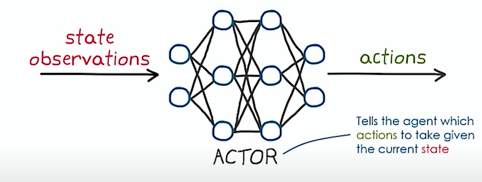
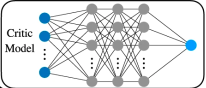
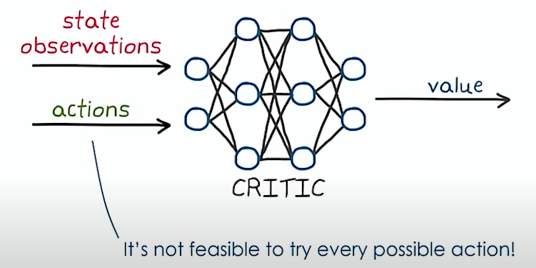
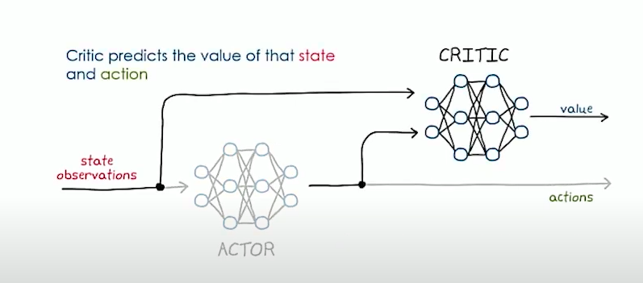

DDPG is a deepRL algorithm for agents with continuous actions space and Useful Particularly in the field of robotics where actuators and motors take continuous signal . We ll see how this can be implemented in code.
We wont go in depth into theory but focus on implementation.
Promise
After reading till the end of the blog, you should be able to implement DDPG for continuous action space based environments.
Here is a half cheetah I trained using DDPG.
Theory
DDPG is a modification on the actor-critic algorithm.
Lets Explore actor-critic algorithm and how it can be modified for continuous action space
Implementation
actor Critic is a value gradient RL algorithm where we have two Neural Network function as function approximator.
One NN is Actor which takes in state and predict a probability of taking different actions.

The other NN is called Critic which takes in state and try to predict value function of the state.

We trains these NNs in a way that tries to increase the value function of state x0.
Mathematically, expressing the above statement
\(V_\pi(x) = g(x,\pi(x)) + \alpha*V_\pi(x+1)\) = value function for policy \(\pi\) . This in deep RL is usually approximate by a Neural Net called Critic net
if \(J(\theta) = V_\pi(x_0)\) approximate value function for an episode starting at x0 following policy \(\pi(\theta)\) ,We can decrease \(J(\theta)\) by gradient descent \(\theta_{new} = \theta - \gamma*\Delta J(\theta)\)
so writing more mathematically
\(J(\theta) = E_{u_n}\sim \pi_{\theta}[\sum_{n=0}^N\alpha^n*g(x_n,u_n)]\)
we are able to show(proof not important)
\(\Delta_\theta J(\theta) = E[\sum_{n=0}^N\Psi_n\Delta_nlog\ \pi(u_n|x_n,\theta)]\)
But Actor-Critic is for discrete action space. So we have to modify our actor-critic someway for continuous action space.
So try this…..BUT this does not work because we cannot try every possible action

We use another NN in the pipeline that would try to predict best actions
so if your robots have 4 joints, actor would produce 4 values corresponding to each joint.

Good Idea..BUT how would you train this
Critic training is the same. we try to minimize the td error
For critic loss we take \(\Delta t_d^2\) where \(t_d = g(x_n,u_n)+\gamma*V(x_{n+1)}-V(x_n)\)
For Actor loss we reason as follows. We want to increase the value function of a given state as much as possible. So we should move \(\Theta_{actor}\) that increase this value so if we take loss function as L = -V(state) = - critic(state,actor(state)) and apply gradient descent on this, it ll try to decrease the loss and this increase the value function.
Make Actor and Critic NN
We need a critic NN that takes in state and action value and output a single float i.e. Q value of the state. Also, we need a Actor NN that takes in the state and tried to predict the action values. If a robot has 3 joints , the actor NN would output 3 values between 1 and -1
#We use keras to form our model.
#note critic returns just one value. Actor return N=action dim values between 1 to -1
#we do not need to specify the inout dimensions in the init. It picks that up from call function
import tensorflow.keras as keras
from tensorflow.keras.layers import Dense
class CriticNetwork(keras.Model):
def __init__(self,layer1_dim=512,layer2_dim=512,chkpt_dir='weightFiles /DDPG',name = "Critic"):
super(CriticNetwork,self).__init__()
self.layer1 = Dense(layer1_dim,activation = 'relu')
self.layer2 = Dense(layer2_dim,activation='relu')
self.v = Dense(1,activation=None)
self.checkpoint_file = os.path.join(chkpt_dir,name+"_DDPG.h5")
def call(self,state,action):
x = self.layer1(tf.concat([state,action],axis=1))
x = self.layer2(x)
q = self.v(x)
return q
class ActorNetwork(keras.Model):
def __init__(self,layer1_dim=512,layer2_dim=512,n_action_dim = 2,chkpt_dir="weightFiles/DDPG",name = "Actor"):
super(ActorNetwork,self).__init__()
self.layer1 = Dense(layer1_dim,activation='relu')
self.layer2 = Dense(layer2_dim,activation='relu')
self.actions = Dense(n_action_dim,activation='tanh')
self.checkpoint_file = os.path.join(chkpt_dir,name+"_DDPG.h5")
def call(self,state):
x = self.layer1(state)
x = self.layer2(x)
actions = self.actions(x)
return actions Batches and How to generate them
We create a replay memory where we store some large number of of (state,next_state,action_memory,reward_memory,done) transitions(in our case max is 1000000).
class ReplayBuffer:
def __init__(self,max_size,state_shape,action_shape):
self.mem_cnt=0
self.max_size = max_size
self.states = np.zeros((max_size,*state_shape))
self.next_states = np.zeros((max_size,*state_shape))
self.actions_memory = np.zeros((max_size,*action_shape))
self.rewards_memory = np.zeros((max_size,))
self.dones = np.zeros((max_size,))
def store_transition(self,state,next_state,action,reward,done):
self.mem_cnt+=1
index = self.mem_cnt%self.max_size
self.states[index] = state
self.next_states[index] = next_state
self.actions_memory[index] = action
self.rewards_memory[index] = reward
self.dones[index] = doneFor training we sample this memory for a batch of given size (in our case 64) and try to minimize our loss on that.
def sample_buffer(self,batch_size):
max_mem = min(self.mem_cnt,self.max_size)
batch = np.random.choice(max_mem,batch_size,replace = False)
states = self.states[batch]
next_states = self.next_states[batch]
actions = self.actions_memory[batch]
rewards = self.rewards_memory[batch]
dones = self.dones[batch]
return states,next_states,actions,rewards,dones
Loss function
For critic loss we take sum of \(\Delta t_d^2\) where \(t_d = g(x_n,u_n)+\gamma*V(x_{n+1)}-V(x_n)\) for the entire batch and try to minimize it.
First you need to sample a batch and covert everything to tensor so that your NN can do the forward and back prop on it.
states,next_states,actions,rewards,dones = self.memory.sample_buffer(self.batch_size)
states = tf.convert_to_tensor(states,dtype=tf.float32)
next_states = tf.convert_to_tensor(next_states,dtype=tf.float32)
actions = tf.convert_to_tensor(actions,dtype=tf.float32)
rewards = tf.convert_to_tensor(rewards,dtype=tf.float32)
dones = tf.convert_to_tensor(dones,dtype=tf.float32)
After you have the batch then you can find the critic loss = sum of td error. But remember you need gradient of critic loss so put it inside GradientTape so Pytorch knows that it needs to form a computation graph.
with tf.GradientTape() as tape:
target_actions = self.target_actor(next_states)
next_critic_val = tf.squeeze(self.target_critic(next_states,target_actions),1)
critic_val = tf.squeeze(self.critic(states,actions),1)
target = rewards+self.gamma*next_critic_val*(1-done)
critic_loss = keras.losses.MSE(target,critic_val)
#calculate the gradient and apply it
critic_network_gradient = tape.gradient(critic_loss,self.critic.trainable_variables)
self.critic.optimizer.apply_gradients(zip(critic_network_gradient,self.critic.trainable_variables))For Actor loss,as explained earlier, we take loss function as L = -V(state) = - critic(state,actor(state))
with tf.GradientTape() as tape:
new_policy_actions = self.actor(states)
actor_loss = -self.critic(states,new_policy_actions)
actor_loss = tf.math.reduce_mean(actor_loss)
actor_network_gradient = tape.gradient(actor_loss,self.actor.trainable_variables)
self.actor.optimizer.apply_gradients(zip(actor_network_gradient,self.actor.trainable_variables))
Target and Non-Target NN. when is each used in training
Target weight trails behind non target weight in update. The learning ie. Gradient descent is done on non target weight for a batch and then target is updated like target_weight = 0.995*target_weight+0.005*non_target weight
But when calculating critic and actor loss , while we want Q val of a state action pair, Target network is taken. The rational behind this is that target is slow moving hence more stable to current sampling that might move too randomly to converge